<!DOCTYPE html>
<html>
<head>
    
    <meta http-equiv="content-type" content="text/html; charset=UTF-8" />
    
        <script>
            L_NO_TOUCH = false;
            L_DISABLE_3D = false;
        </script>
    
    <style>html, body {width: 100%;height: 100%;margin: 0;padding: 0;}</style>
    <style>#map {position:absolute;top:0;bottom:0;right:0;left:0;}</style>
    <script src="https://cdn.jsdelivr.net/npm/leaflet@1.9.3/dist/leaflet.js"></script>
    <script src="https://code.jquery.com/jquery-3.7.1.min.js"></script>
    <script src="https://cdn.jsdelivr.net/npm/bootstrap@5.2.2/dist/js/bootstrap.bundle.min.js"></script>
    <script src="https://cdnjs.cloudflare.com/ajax/libs/Leaflet.awesome-markers/2.0.2/leaflet.awesome-markers.js"></script>
    <link rel="stylesheet" href="https://cdn.jsdelivr.net/npm/leaflet@1.9.3/dist/leaflet.css"/>
    <link rel="stylesheet" href="https://cdn.jsdelivr.net/npm/bootstrap@5.2.2/dist/css/bootstrap.min.css"/>
    <link rel="stylesheet" href="https://netdna.bootstrapcdn.com/bootstrap/3.0.0/css/bootstrap-glyphicons.css"/>
    <link rel="stylesheet" href="https://cdn.jsdelivr.net/npm/@fortawesome/fontawesome-free@6.2.0/css/all.min.css"/>
    <link rel="stylesheet" href="https://cdnjs.cloudflare.com/ajax/libs/Leaflet.awesome-markers/2.0.2/leaflet.awesome-markers.css"/>
    <link rel="stylesheet" href="https://cdn.jsdelivr.net/gh/python-visualization/folium/folium/templates/leaflet.awesome.rotate.min.css"/>
    
            <meta name="viewport" content="width=device-width,
                initial-scale=1.0, maximum-scale=1.0, user-scalable=no" />
            <style>
                #map_79e752745585b6843efae43665627b9c {
                    position: relative;
                    width: 100.0%;
                    height: 100.0%;
                    left: 0.0%;
                    top: 0.0%;
                }
                .leaflet-container { font-size: 1rem; }
            </style>
        
    <script src="https://cdnjs.cloudflare.com/ajax/libs/leaflet.markercluster/1.1.0/leaflet.markercluster.js"></script>
    <link rel="stylesheet" href="https://cdnjs.cloudflare.com/ajax/libs/leaflet.markercluster/1.1.0/MarkerCluster.css"/>
    <link rel="stylesheet" href="https://cdnjs.cloudflare.com/ajax/libs/leaflet.markercluster/1.1.0/MarkerCluster.Default.css"/>
</head>
<body>
    
    
<!-- Leaflet LocateControl CSS & JS -->
<link rel="stylesheet" href="https://unpkg.com/leaflet.locatecontrol/dist/L.Control.Locate.min.css" />
<script src="https://unpkg.com/leaflet.locatecontrol/dist/L.Control.Locate.min.js"></script>

<script>
document.addEventListener("DOMContentLoaded", function () {
    var map = window._leaflet_map;

    L.control.locate({
        position: 'topleft',
        strings: {
            title: "Visa min plats"
        },
        locateOptions: {
            enableHighAccuracy: true
        }
    }).addTo(map);
});
</script>
    
<script>
document.addEventListener("DOMContentLoaded", function() {
    // Hämta Leaflet-kartan (den finns som 'map_XXXXX' i Folium)
    window.map = Object.values(window).find(v => v instanceof L.Map);

    function onLocationFound(e) {
        var radius = e.accuracy / 2;

        var userIcon = L.divIcon({
            html: '<div style="font-size: 36px;">🚶‍♂️</div>',  
            className: "",
            iconSize: [36, 36]
        });

        var userMarker = L.marker(e.latlng, {icon: userIcon}).addTo(window.map)
            .bindPopup("Du är här").openPopup();

        L.circle(e.latlng, radius).addTo(window.map);
    }

    function onLocationError(e) {
        alert("Kunde inte hämta plats: " + e.message);
    }

    if (window.map) {
        window.map.on('locationfound', onLocationFound);
        window.map.on('locationerror', onLocationError);

        // Starta platsförfrågan
        window.map.locate({setView: true, maxZoom: 16});
    } else {
        console.log("Kunde inte hitta Leaflet-kartan.");
    }
});
</script>
    
            <div class="folium-map" id="map_79e752745585b6843efae43665627b9c" ></div>
        
</body>
<script>
    
    
            var map_79e752745585b6843efae43665627b9c = L.map(
                "map_79e752745585b6843efae43665627b9c",
                {
                    center: [59.3293, 18.0686],
                    crs: L.CRS.EPSG3857,
                    ...{
  "zoom": 15,
  "zoomControl": true,
  "preferCanvas": false,
}

                }
            );

            

        
    
            var tile_layer_02798eef8a5c0e170fef3d85d0f48d3a = L.tileLayer(
                "https://{s}.basemaps.cartocdn.com/rastertiles/voyager/{z}/{x}/{y}{r}.png",
                {
  "minZoom": 0,
  "maxZoom": 20,
  "maxNativeZoom": 20,
  "noWrap": false,
  "attribution": "CartoDB",
  "subdomains": "abcd",
  "detectRetina": false,
  "tms": false,
  "opacity": 1,
}

            );
        
    
            tile_layer_02798eef8a5c0e170fef3d85d0f48d3a.addTo(map_79e752745585b6843efae43665627b9c);
        
    
            var marker_cluster_5f0f53a20f64268faf3d86b8cc12e83a = L.markerClusterGroup(
                {
}
            );
        
    
            marker_cluster_5f0f53a20f64268faf3d86b8cc12e83a.addTo(map_79e752745585b6843efae43665627b9c);
        
    
            var marker_f0d5a4e31f59515bf0bf5de3efe398c9 = L.marker(
                [59.33210074001757, 18.07150116288134],
                {
}
            ).addTo(map_79e752745585b6843efae43665627b9c);
        
    
            var div_icon_3a604d7915ffd4a5147b4f81815e52a3 = L.divIcon({
  "html": "\n        \u003cdiv style=\"background-color: #91D34C; color: white;\n                        border-radius: 50%; width: 28px; height: 28px;\n                        text-align: center; line-height: 28px;\n                        font-weight: bold;\"\u003e1\u003c/div\u003e\n        ",
  "className": "empty",
});
            marker_f0d5a4e31f59515bf0bf5de3efe398c9.setIcon(div_icon_3a604d7915ffd4a5147b4f81815e52a3);
        
    
        var popup_1d5e1f5d4dc41d09bbce46e22679f86c = L.popup({
  "maxWidth": 320,
});

        
            
                var html_582a64b8d7a743e1a6788bcc1e6cefe5 = $(`<div id="html_582a64b8d7a743e1a6788bcc1e6cefe5" style="width: 100.0%; height: 100.0%;">     <div style="max-height: 500px; width: 280px; overflow-y: auto; padding: 10px;">         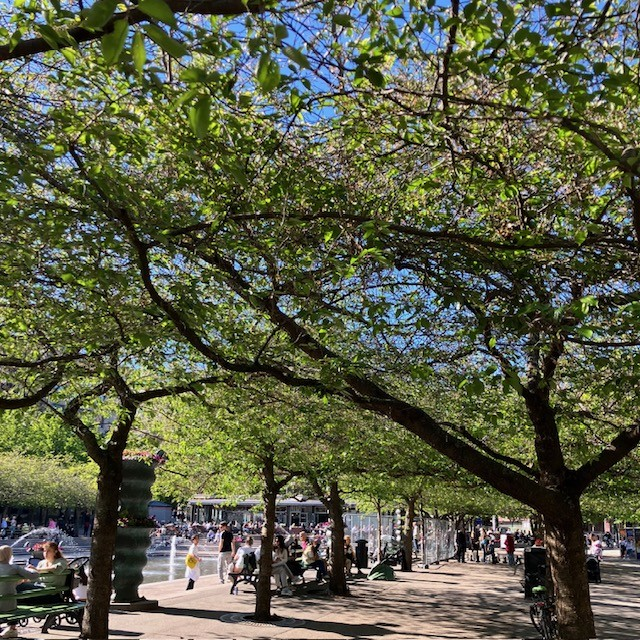         <h2 style='margin-bottom: 10px;'>1. Kungsträdgården, vid dammen</h2>         <h4 style='color: darkgreen; margin-top: 0;'>Prydnadskörsbär, Prunus ’Accolade’</h4>         <div style='font-size: 15px; line-height: 1.6; text-align: justify;'>       <div style="font-family: Arial, sans-serif; font-size: 15px; line-height: 1.6; text-align: left;">      Det är inte varje dag man får promenera med huvudet i fluffiga rosa moln. Varje vår blir det en nyhet i hela landet när körsbärsträden i Kungsträdgården blommar. Stockholmare och turister vallfärdar för att fotografera denna blomsterfägring av vackert rosa, halvfyllda blommor i slutet av april.      <p>Körsbärsträden planterades 1998, i dubbla rader på båda sidorna av dammen. Träden är en hybrid mellan bergkörsbär (Prunus sargentii) och vårkörsbär (Prunus subhirtella). Den har en smalare krona i ungdomen men blir bredare med tiden, för att till slut få en nästan flat kronuppbyggnad, där grenarna hänger nedåt.</p>      <p>Andra platser i staden där du kan se prydnadskörsbär är på Luma torg i Hammarby Sjöstad.</p>      </div>      </div>         <div style="margin-top: 10px; display: flex; justify-content: center; gap: 8px; flex-wrap: wrap;">             <audio id="audio1" src="1.m4a"></audio>             <a href="javascript:document.getElementsByClassName('leaflet-marker-icon')[15].click();"               style="background-color: #91D34C; color: white; padding: 8px 12px;                       text-decoration: none; border-radius: 6px; display: inline-block;">               ← Föregående             </a>             <a href="javascript:document.getElementById('audio1').play();"               style="background-color: #FFA500; color: white; padding: 8px 12px;                       text-decoration: none; border-radius: 6px; display: inline-block;">               Lyssna             </a>             <a href="javascript:document.getElementsByClassName('leaflet-marker-icon')[1].click();"               style="background-color: #91D34C; color: white; padding: 8px 12px;                       text-decoration: none; border-radius: 6px; display: inline-block;">               Nästa →             </a>         </div>     </div>     </div>`)[0];
                popup_1d5e1f5d4dc41d09bbce46e22679f86c.setContent(html_582a64b8d7a743e1a6788bcc1e6cefe5);
            
        

        marker_f0d5a4e31f59515bf0bf5de3efe398c9.bindPopup(popup_1d5e1f5d4dc41d09bbce46e22679f86c)
        ;

        
    
    
                marker_f0d5a4e31f59515bf0bf5de3efe398c9.setIcon(div_icon_3a604d7915ffd4a5147b4f81815e52a3);
            
    
            var marker_0a68400d942dc0a7681a676f62807aa9 = L.marker(
                [59.33158633411901, 18.07190885862338],
                {
}
            ).addTo(map_79e752745585b6843efae43665627b9c);
        
    
            var div_icon_e06dfeaffd08e511e69f0d87deb0e820 = L.divIcon({
  "html": "\n        \u003cdiv style=\"background-color: #91D34C; color: white;\n                        border-radius: 50%; width: 28px; height: 28px;\n                        text-align: center; line-height: 28px;\n                        font-weight: bold;\"\u003e2\u003c/div\u003e\n        ",
  "className": "empty",
});
            marker_0a68400d942dc0a7681a676f62807aa9.setIcon(div_icon_e06dfeaffd08e511e69f0d87deb0e820);
        
    
        var popup_946beb3ada87f99ade786fec6f3800b4 = L.popup({
  "maxWidth": 320,
});

        
            
                var html_2529cece529bc69ed968c4bde2be4998 = $(`<div id="html_2529cece529bc69ed968c4bde2be4998" style="width: 100.0%; height: 100.0%;">     <div style="max-height: 500px; width: 280px; overflow-y: auto; padding: 10px;">         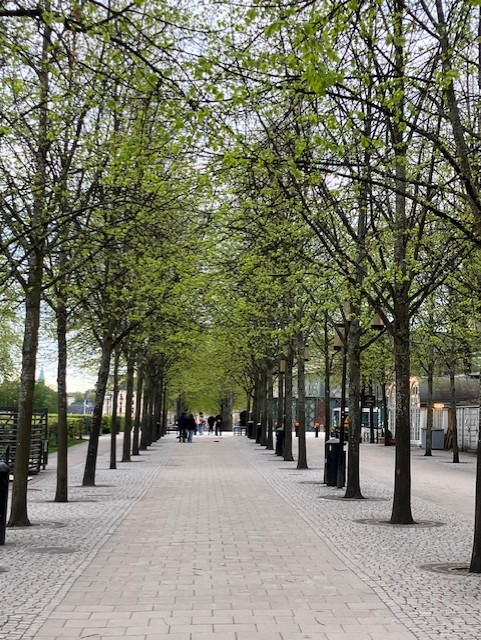         <h2 style='margin-bottom: 10px;'>2. Kungsträdgården, vid alléerna</h2>         <h4 style='color: darkgreen; margin-top: 0;'>Skogslind, Tilia X cordata ’Rancho’, selektion av skogslind</h4>         <div style='font-size: 15px; line-height: 1.6; text-align: justify;'>       <div style="font-family: Arial, sans-serif; font-size: 15px; line-height: 1.6; text-align: left;">      Lind är det vanligaste trädet på innerstadens gator. Framför allt på grund av esplanadsystemets utbyggnad under slutet av 1800-talet, men även för att det är lättskött och klarar sig ganska bra i staden. I Kungsträdgården står lindarna i två, dubbelradiga alléer på var sida om parken – Jussi Björlings allé och Birgit Nilssons allé. Träden som står där idag planterades 1996 och 2003–2006.      <p>Benämningen cordata syftar till bladens hjärtform. Linden kan under sommaren avge så kallad honungsdagg – ett sekret som utsöndras av löss som suger växtsaft ur bladen.</p>      <p>Andra platser i staden där du kan se skogslind är på trottoaren vid Hammarby allé.</p>      </div>      </div>         <div style="margin-top: 10px; display: flex; justify-content: center; gap: 8px; flex-wrap: wrap;">             <audio id="audio2" src="2.m4a"></audio>             <a href="javascript:document.getElementsByClassName('leaflet-marker-icon')[0].click();"               style="background-color: #91D34C; color: white; padding: 8px 12px;                       text-decoration: none; border-radius: 6px; display: inline-block;">               ← Föregående             </a>             <a href="javascript:document.getElementById('audio2').play();"               style="background-color: #FFA500; color: white; padding: 8px 12px;                       text-decoration: none; border-radius: 6px; display: inline-block;">               Lyssna             </a>             <a href="javascript:document.getElementsByClassName('leaflet-marker-icon')[2].click();"               style="background-color: #91D34C; color: white; padding: 8px 12px;                       text-decoration: none; border-radius: 6px; display: inline-block;">               Nästa →             </a>         </div>     </div>     </div>`)[0];
                popup_946beb3ada87f99ade786fec6f3800b4.setContent(html_2529cece529bc69ed968c4bde2be4998);
            
        

        marker_0a68400d942dc0a7681a676f62807aa9.bindPopup(popup_946beb3ada87f99ade786fec6f3800b4)
        ;

        
    
    
                marker_0a68400d942dc0a7681a676f62807aa9.setIcon(div_icon_e06dfeaffd08e511e69f0d87deb0e820);
            
    
            var marker_c4e625813b4891ad7ca4b07f714c349a = L.marker(
                [59.330464464454856, 18.071962502799966],
                {
}
            ).addTo(map_79e752745585b6843efae43665627b9c);
        
    
            var div_icon_88611e5e1a561ff268cfd2f3387573eb = L.divIcon({
  "html": "\n        \u003cdiv style=\"background-color: #91D34C; color: white;\n                        border-radius: 50%; width: 28px; height: 28px;\n                        text-align: center; line-height: 28px;\n                        font-weight: bold;\"\u003e3\u003c/div\u003e\n        ",
  "className": "empty",
});
            marker_c4e625813b4891ad7ca4b07f714c349a.setIcon(div_icon_88611e5e1a561ff268cfd2f3387573eb);
        
    
        var popup_a48e7241ee5e7a0254e774e33c746259 = L.popup({
  "maxWidth": 320,
});

        
            
                var html_962028f40a3508b75f6355bc03d5196e = $(`<div id="html_962028f40a3508b75f6355bc03d5196e" style="width: 100.0%; height: 100.0%;">     <div style="max-height: 500px; width: 280px; overflow-y: auto; padding: 10px;">         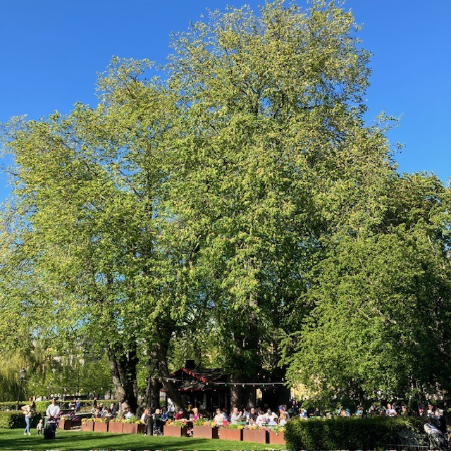         <h2 style='margin-bottom: 10px;'>3. Kungsträdgården, vid Tehuset</h2>         <h4 style='color: darkgreen; margin-top: 0;'>Skogsalm, Ulmus gla bra</h4>         <div style='font-size: 15px; line-height: 1.6; text-align: justify;'>       <div style="font-family: Arial, sans-serif; font-size: 15px; line-height: 1.6; text-align: left;">      Almarna är planterade i slutet av 1800-talet som en så kallad boskée, en formellt planterad grupp av träd, ofta i rader eller geometriska mönster, som skapar ett avgränsat rum i en park. Idag står Tehuset i den cirkelformade planteringen. Almen var ett av de vanligaste stadsträden i både park- och gatumiljöer innan den allvarliga typen av almsjukan gjorde sitt intåg.      <p>Almen växer i en vasform, med en tidigt uppsplittrad krona och stora, mörkgröna, asymmetriska, sågade blad. Höstfärgen är gyllengul. De blommar på bar kvist under vårvintern med små blommor.</p>      <p>1971 planerade politikerna i Stockholm att bygga en tunnelbaneuppgång till Kungsträdgårdens tunnelbana precis där almarna står. Det blev stora protester som slutade med att almarna fick stå kvar.</p>      </div>      </div>         <div style="margin-top: 10px; display: flex; justify-content: center; gap: 8px; flex-wrap: wrap;">             <audio id="audio3" src="3.m4a"></audio>             <a href="javascript:document.getElementsByClassName('leaflet-marker-icon')[1].click();"               style="background-color: #91D34C; color: white; padding: 8px 12px;                       text-decoration: none; border-radius: 6px; display: inline-block;">               ← Föregående             </a>             <a href="javascript:document.getElementById('audio3').play();"               style="background-color: #FFA500; color: white; padding: 8px 12px;                       text-decoration: none; border-radius: 6px; display: inline-block;">               Lyssna             </a>             <a href="javascript:document.getElementsByClassName('leaflet-marker-icon')[3].click();"               style="background-color: #91D34C; color: white; padding: 8px 12px;                       text-decoration: none; border-radius: 6px; display: inline-block;">               Nästa →             </a>         </div>     </div>     </div>`)[0];
                popup_a48e7241ee5e7a0254e774e33c746259.setContent(html_962028f40a3508b75f6355bc03d5196e);
            
        

        marker_c4e625813b4891ad7ca4b07f714c349a.bindPopup(popup_a48e7241ee5e7a0254e774e33c746259)
        ;

        
    
    
                marker_c4e625813b4891ad7ca4b07f714c349a.setIcon(div_icon_88611e5e1a561ff268cfd2f3387573eb);
            
    
            var marker_ed579da0568af6d062d90b99bcded056 = L.marker(
                [59.33044257393739, 18.069258836239964],
                {
}
            ).addTo(map_79e752745585b6843efae43665627b9c);
        
    
            var div_icon_25705ecaef74f0692bf71c8df74eeca3 = L.divIcon({
  "html": "\n        \u003cdiv style=\"background-color: #91D34C; color: white;\n                        border-radius: 50%; width: 28px; height: 28px;\n                        text-align: center; line-height: 28px;\n                        font-weight: bold;\"\u003e4\u003c/div\u003e\n        ",
  "className": "empty",
});
            marker_ed579da0568af6d062d90b99bcded056.setIcon(div_icon_25705ecaef74f0692bf71c8df74eeca3);
        
    
        var popup_0541636927f0169ee7657faff0157c59 = L.popup({
  "maxWidth": 320,
});

        
            
                var html_584c7d281023b4eb8857cebd1f4a7ea3 = $(`<div id="html_584c7d281023b4eb8857cebd1f4a7ea3" style="width: 100.0%; height: 100.0%;">     <div style="max-height: 500px; width: 280px; overflow-y: auto; padding: 10px;">         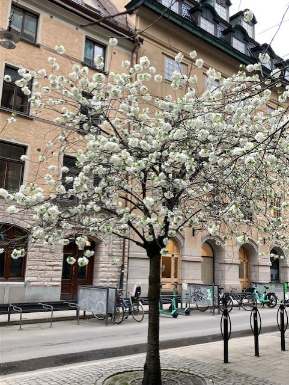         <h2 style='margin-bottom: 10px;'>4. Jakobsgatan vid Hamburger Börs</h2>         <h4 style='color: darkgreen; margin-top: 0;'>Hybridkörsbär, Prunus X gondouinii ’Schnee’</h4>         <div style='font-size: 15px; line-height: 1.6; text-align: justify;'>       <div style="font-family: Arial, sans-serif; font-size: 15px; line-height: 1.6; text-align: left;">      Det här är ett mindre träd med en först konisk, senare brett rundad och slutligen något tillplattad krona. Det har en mycket rik blomning och blommar på bar kvist i början av maj. Blommorna är rent vita och enkla till något fyllda. Höstfärgerna är sprakande, i gult till orangerött. Träden planterades under 1990-talet.      </div>      </div>         <div style="margin-top: 10px; display: flex; justify-content: center; gap: 8px; flex-wrap: wrap;">             <audio id="audio4" src="4.m4a"></audio>             <a href="javascript:document.getElementsByClassName('leaflet-marker-icon')[2].click();"               style="background-color: #91D34C; color: white; padding: 8px 12px;                       text-decoration: none; border-radius: 6px; display: inline-block;">               ← Föregående             </a>             <a href="javascript:document.getElementById('audio4').play();"               style="background-color: #FFA500; color: white; padding: 8px 12px;                       text-decoration: none; border-radius: 6px; display: inline-block;">               Lyssna             </a>             <a href="javascript:document.getElementsByClassName('leaflet-marker-icon')[4].click();"               style="background-color: #91D34C; color: white; padding: 8px 12px;                       text-decoration: none; border-radius: 6px; display: inline-block;">               Nästa →             </a>         </div>     </div>     </div>`)[0];
                popup_0541636927f0169ee7657faff0157c59.setContent(html_584c7d281023b4eb8857cebd1f4a7ea3);
            
        

        marker_ed579da0568af6d062d90b99bcded056.bindPopup(popup_0541636927f0169ee7657faff0157c59)
        ;

        
    
    
                marker_ed579da0568af6d062d90b99bcded056.setIcon(div_icon_25705ecaef74f0692bf71c8df74eeca3);
            
    
            var marker_e07a8833229b247fce9604ca1db0375f = L.marker(
                [59.33065600579097, 18.068572190779687],
                {
}
            ).addTo(map_79e752745585b6843efae43665627b9c);
        
    
            var div_icon_7a344793b0bf607ddd90fa0bb86404ec = L.divIcon({
  "html": "\n        \u003cdiv style=\"background-color: #91D34C; color: white;\n                        border-radius: 50%; width: 28px; height: 28px;\n                        text-align: center; line-height: 28px;\n                        font-weight: bold;\"\u003e5\u003c/div\u003e\n        ",
  "className": "empty",
});
            marker_e07a8833229b247fce9604ca1db0375f.setIcon(div_icon_7a344793b0bf607ddd90fa0bb86404ec);
        
    
        var popup_5f2e64fb496368faa1d971af3f6545c4 = L.popup({
  "maxWidth": 320,
});

        
            
                var html_673fba6605a0bd4896bb32e6d5e2fcf8 = $(`<div id="html_673fba6605a0bd4896bb32e6d5e2fcf8" style="width: 100.0%; height: 100.0%;">     <div style="max-height: 500px; width: 280px; overflow-y: auto; padding: 10px;">                  <h2 style='margin-bottom: 10px;'>5. Regeringsgatan, mittemot Gallerian</h2>         <h4 style='color: darkgreen; margin-top: 0;'>Mannaask, Fraxinus ornus</h4>         <div style='font-size: 15px; line-height: 1.6; text-align: justify;'>       <div style="font-family: Arial, sans-serif; font-size: 15px; line-height: 1.6; text-align: left;">      I de upphöjda betongkaren på Regeringsgatan planterades mannaaskar i mitten av 1970-talet. Detta lilla och långsamt växande träd har en god förmåga att klara av knappa förhållanden och är friskt grön i färgen. Kronan är samlad och har en rund till oval form. Höstfärgen är gul. I juni blommar träden generöst med vita plymer. Den kåda som utvinns ur träden i odlingar i Sydeuropa används som ett laxermedel, och skiljer sig från den manna som omnämns i andra sammanhang.      <p>Andra platser i staden där du kan se mannaask är på Brunkebergstorg vid Riksbanken och på Mäster Samuelsgatan.</p>      </div>      </div>         <div style="margin-top: 10px; display: flex; justify-content: center; gap: 8px; flex-wrap: wrap;">             <audio id="audio5" src="5.m4a"></audio>             <a href="javascript:document.getElementsByClassName('leaflet-marker-icon')[3].click();"               style="background-color: #91D34C; color: white; padding: 8px 12px;                       text-decoration: none; border-radius: 6px; display: inline-block;">               ← Föregående             </a>             <a href="javascript:document.getElementById('audio5').play();"               style="background-color: #FFA500; color: white; padding: 8px 12px;                       text-decoration: none; border-radius: 6px; display: inline-block;">               Lyssna             </a>             <a href="javascript:document.getElementsByClassName('leaflet-marker-icon')[5].click();"               style="background-color: #91D34C; color: white; padding: 8px 12px;                       text-decoration: none; border-radius: 6px; display: inline-block;">               Nästa →             </a>         </div>     </div>     </div>`)[0];
                popup_5f2e64fb496368faa1d971af3f6545c4.setContent(html_673fba6605a0bd4896bb32e6d5e2fcf8);
            
        

        marker_e07a8833229b247fce9604ca1db0375f.bindPopup(popup_5f2e64fb496368faa1d971af3f6545c4)
        ;

        
    
    
                marker_e07a8833229b247fce9604ca1db0375f.setIcon(div_icon_7a344793b0bf607ddd90fa0bb86404ec);
            
    
            var marker_8af3d5fbcba6240f7cb7186669bf9fe4 = L.marker(
                [59.330171677731, 18.067939189495995],
                {
}
            ).addTo(map_79e752745585b6843efae43665627b9c);
        
    
            var div_icon_41627acc4ee454fd6c7f4f79055b97bf = L.divIcon({
  "html": "\n        \u003cdiv style=\"background-color: #91D34C; color: white;\n                        border-radius: 50%; width: 28px; height: 28px;\n                        text-align: center; line-height: 28px;\n                        font-weight: bold;\"\u003e6\u003c/div\u003e\n        ",
  "className": "empty",
});
            marker_8af3d5fbcba6240f7cb7186669bf9fe4.setIcon(div_icon_41627acc4ee454fd6c7f4f79055b97bf);
        
    
        var popup_a709bb30f6d9637230f2b713af3b1e98 = L.popup({
  "maxWidth": 320,
});

        
            
                var html_4c7249954c728fbc48aa310cbcb409c7 = $(`<div id="html_4c7249954c728fbc48aa310cbcb409c7" style="width: 100.0%; height: 100.0%;">     <div style="max-height: 500px; width: 280px; overflow-y: auto; padding: 10px;">                  <h2 style='margin-bottom: 10px;'>6. Jakobsgatan, utanför Gallerian</h2>         <h4 style='color: darkgreen; margin-top: 0;'>Kärrek, Quercus palustris</h4>         <div style='font-size: 15px; line-height: 1.6; text-align: justify;'>       <div style="font-family: Arial, sans-serif; font-size: 15px; line-height: 1.6; text-align: left;">      Unga kärrekar har en spikrak, genomgående stam och en konisk kronform. Med tiden breder kronan ut sig och de nedersta grenarna får ett hängande växtsätt. Bladen är djupflikiga och klargrönt glänsande, och får vackra höstfärger. Träden producerar rikligt med ekollon.      <p>Kärrekarna på Jakobsgatan planterades under slutet av 1990-talet.</p>      <p>Andra platser i staden där du kan hitta kärrek är på Eastmanvägen och Olivecronas väg i Sabbatsbergsområdet, där kärrekarna växer så det knakar. Du kan också se kärrekar i Järnvägsparken, bredvid Tegelbacken. De träden har flyttats från Malmtorgsgatan och står i en grupp om fem träd och en solitärt. I Kista dominerar kärreken bland gatuträden.</p>      </div>      </div>         <div style="margin-top: 10px; display: flex; justify-content: center; gap: 8px; flex-wrap: wrap;">             <audio id="audio6" src="6.m4a"></audio>             <a href="javascript:document.getElementsByClassName('leaflet-marker-icon')[4].click();"               style="background-color: #91D34C; color: white; padding: 8px 12px;                       text-decoration: none; border-radius: 6px; display: inline-block;">               ← Föregående             </a>             <a href="javascript:document.getElementById('audio6').play();"               style="background-color: #FFA500; color: white; padding: 8px 12px;                       text-decoration: none; border-radius: 6px; display: inline-block;">               Lyssna             </a>             <a href="javascript:document.getElementsByClassName('leaflet-marker-icon')[6].click();"               style="background-color: #91D34C; color: white; padding: 8px 12px;                       text-decoration: none; border-radius: 6px; display: inline-block;">               Nästa →             </a>         </div>     </div>     </div>`)[0];
                popup_a709bb30f6d9637230f2b713af3b1e98.setContent(html_4c7249954c728fbc48aa310cbcb409c7);
            
        

        marker_8af3d5fbcba6240f7cb7186669bf9fe4.bindPopup(popup_a709bb30f6d9637230f2b713af3b1e98)
        ;

        
    
    
                marker_8af3d5fbcba6240f7cb7186669bf9fe4.setIcon(div_icon_41627acc4ee454fd6c7f4f79055b97bf);
            
    
            var marker_f85a0ef472633f1ce18805fbad49d03a = L.marker(
                [59.33005948775691, 18.067386654418506],
                {
}
            ).addTo(map_79e752745585b6843efae43665627b9c);
        
    
            var div_icon_26e46508638170bb39bd98c041c75878 = L.divIcon({
  "html": "\n        \u003cdiv style=\"background-color: #91D34C; color: white;\n                        border-radius: 50%; width: 28px; height: 28px;\n                        text-align: center; line-height: 28px;\n                        font-weight: bold;\"\u003e7\u003c/div\u003e\n        ",
  "className": "empty",
});
            marker_f85a0ef472633f1ce18805fbad49d03a.setIcon(div_icon_26e46508638170bb39bd98c041c75878);
        
    
        var popup_d6d78639aa19717920d6f7cec7d039c7 = L.popup({
  "maxWidth": 320,
});

        
            
                var html_71eeaea3eba04b2daf249c762337c7d3 = $(`<div id="html_71eeaea3eba04b2daf249c762337c7d3" style="width: 100.0%; height: 100.0%;">     <div style="max-height: 500px; width: 280px; overflow-y: auto; padding: 10px;">         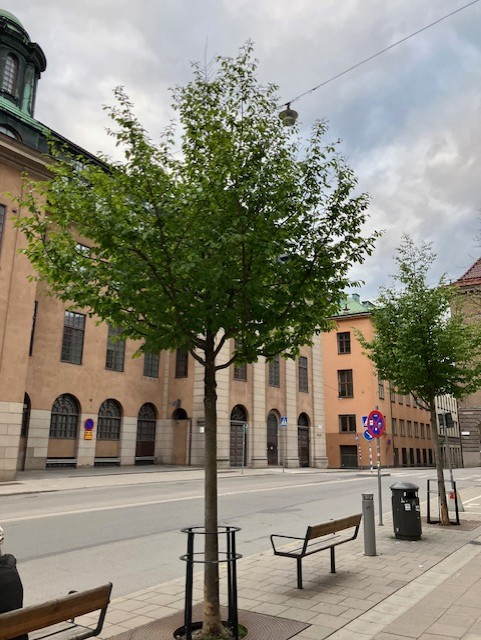         <h2 style='margin-bottom: 10px;'>7. Jakobsgatan, korsningen Malmtorgsgatan</h2>         <h4 style='color: darkgreen; margin-top: 0;'>Papegojbuske, Parrotia persica</h4>         <div style='font-size: 15px; line-height: 1.6; text-align: justify;'>       <div style="font-family: Arial, sans-serif; font-size: 15px; line-height: 1.6; text-align: left;">      Papegojbusken är trots sitt namn egentligen ett mindre träd, som kan bli upp till tio meter högt. Dessa träd får en fantastisk höstfärg i orange, rött och lila. Finast färger får trädet på en varm växtplats och efter en varm sommar.      <p>Träden planterades 2019.</p>      <p>Andra platser i staden där du kan se papegojbuske är på Medevigatan och Luntmakargatan.</p>      </div>      </div>         <div style="margin-top: 10px; display: flex; justify-content: center; gap: 8px; flex-wrap: wrap;">             <audio id="audio7" src="7.m4a"></audio>             <a href="javascript:document.getElementsByClassName('leaflet-marker-icon')[5].click();"               style="background-color: #91D34C; color: white; padding: 8px 12px;                       text-decoration: none; border-radius: 6px; display: inline-block;">               ← Föregående             </a>             <a href="javascript:document.getElementById('audio7').play();"               style="background-color: #FFA500; color: white; padding: 8px 12px;                       text-decoration: none; border-radius: 6px; display: inline-block;">               Lyssna             </a>             <a href="javascript:document.getElementsByClassName('leaflet-marker-icon')[7].click();"               style="background-color: #91D34C; color: white; padding: 8px 12px;                       text-decoration: none; border-radius: 6px; display: inline-block;">               Nästa →             </a>         </div>     </div>     </div>`)[0];
                popup_d6d78639aa19717920d6f7cec7d039c7.setContent(html_71eeaea3eba04b2daf249c762337c7d3);
            
        

        marker_f85a0ef472633f1ce18805fbad49d03a.bindPopup(popup_d6d78639aa19717920d6f7cec7d039c7)
        ;

        
    
    
                marker_f85a0ef472633f1ce18805fbad49d03a.setIcon(div_icon_26e46508638170bb39bd98c041c75878);
            
    
            var marker_dcbc82da95ee69c46e8fce88b78724fb = L.marker(
                [59.33027839467252, 18.067145255623878],
                {
}
            ).addTo(map_79e752745585b6843efae43665627b9c);
        
    
            var div_icon_fd1ddc3a6d9aec0fb565c14beb8f8976 = L.divIcon({
  "html": "\n        \u003cdiv style=\"background-color: #91D34C; color: white;\n                        border-radius: 50%; width: 28px; height: 28px;\n                        text-align: center; line-height: 28px;\n                        font-weight: bold;\"\u003e8\u003c/div\u003e\n        ",
  "className": "empty",
});
            marker_dcbc82da95ee69c46e8fce88b78724fb.setIcon(div_icon_fd1ddc3a6d9aec0fb565c14beb8f8976);
        
    
        var popup_894cf41f69f1a9aa09bd2fbe7502fa9f = L.popup({
  "maxWidth": 320,
});

        
            
                var html_d20fc4b58221ce41105517e84a20bebb = $(`<div id="html_d20fc4b58221ce41105517e84a20bebb" style="width: 100.0%; height: 100.0%;">     <div style="max-height: 500px; width: 280px; overflow-y: auto; padding: 10px;">         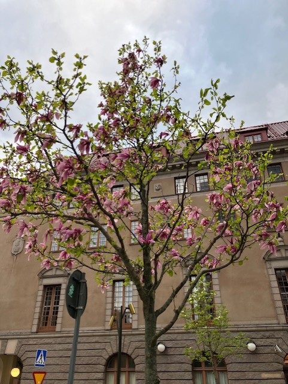         <h2 style='margin-bottom: 10px;'>8. Malmtorgsgatans östra sida</h2>         <h4 style='color: darkgreen; margin-top: 0;'>Magnolia ’Galaxy’</h4>         <div style='font-size: 15px; line-height: 1.6; text-align: justify;'>Denna magnolia blommar med stora rosaröda blommor.</div>         <div style="margin-top: 10px; display: flex; justify-content: center; gap: 8px; flex-wrap: wrap;">             <audio id="audio8" src="8.m4a"></audio>             <a href="javascript:document.getElementsByClassName('leaflet-marker-icon')[6].click();"               style="background-color: #91D34C; color: white; padding: 8px 12px;                       text-decoration: none; border-radius: 6px; display: inline-block;">               ← Föregående             </a>             <a href="javascript:document.getElementById('audio8').play();"               style="background-color: #FFA500; color: white; padding: 8px 12px;                       text-decoration: none; border-radius: 6px; display: inline-block;">               Lyssna             </a>             <a href="javascript:document.getElementsByClassName('leaflet-marker-icon')[8].click();"               style="background-color: #91D34C; color: white; padding: 8px 12px;                       text-decoration: none; border-radius: 6px; display: inline-block;">               Nästa →             </a>         </div>     </div>     </div>`)[0];
                popup_894cf41f69f1a9aa09bd2fbe7502fa9f.setContent(html_d20fc4b58221ce41105517e84a20bebb);
            
        

        marker_dcbc82da95ee69c46e8fce88b78724fb.bindPopup(popup_894cf41f69f1a9aa09bd2fbe7502fa9f)
        ;

        
    
    
                marker_dcbc82da95ee69c46e8fce88b78724fb.setIcon(div_icon_fd1ddc3a6d9aec0fb565c14beb8f8976);
            
    
            var marker_f8b158a58bd7e7688ca8402cd208f644 = L.marker(
                [59.331404574038345, 18.06636320377362],
                {
}
            ).addTo(map_79e752745585b6843efae43665627b9c);
        
    
            var div_icon_b55211c84465b3e4f0b13fb87b442078 = L.divIcon({
  "html": "\n        \u003cdiv style=\"background-color: #91D34C; color: white;\n                        border-radius: 50%; width: 28px; height: 28px;\n                        text-align: center; line-height: 28px;\n                        font-weight: bold;\"\u003e9\u003c/div\u003e\n        ",
  "className": "empty",
});
            marker_f8b158a58bd7e7688ca8402cd208f644.setIcon(div_icon_b55211c84465b3e4f0b13fb87b442078);
        
    
        var popup_e419416a662af5fd20dadd0d3e855ca4 = L.popup({
  "maxWidth": 320,
});

        
            
                var html_9f0f4d4d05ae3926720f6b441697c96b = $(`<div id="html_9f0f4d4d05ae3926720f6b441697c96b" style="width: 100.0%; height: 100.0%;">     <div style="max-height: 500px; width: 280px; overflow-y: auto; padding: 10px;">         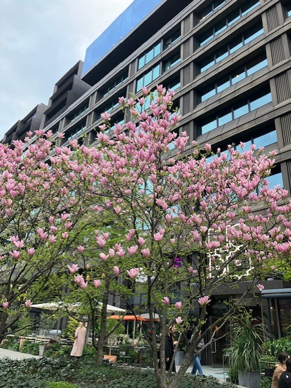         <h2 style='margin-bottom: 10px;'>9. Brunkebergstorg</h2>         <h4 style='color: darkgreen; margin-top: 0;'>Magnolia</h4>         <div style='font-size: 15px; line-height: 1.6; text-align: justify;'>       <div style="font-family: Arial, sans-serif; font-size: 15px; line-height: 1.6; text-align: left;">      År 2017 rustade staden upp Brunkebergstorg i samarbete med fastighetsägare för att skapa en bättre mötesplats mitt i city. Platsen är belagd med granithällar och i de upphöjda terrazzocirklarna planterades en blandning av magnolior med olika karaktär.      <p>Wada’s Memory är en hybrid mellan japansk magnolia (Magnolia kobus) och pilbladig magnolia (Magnolia salicifolia). Den blommar med stora, helvita blommor och har blomblad som hänger nedåt.</p>      <p>Rosenmagnolia ’Heaven scent’ är en kulturhybrid mellan yunanmagnolia (Magnolia denudata) och liljemagnolian (Magnolia liliflora). Den blommar med doftande, rosaröda blommor.</p>      <p>Biondi är en av de tidigast blommande magnoliorna. Den får vita blommor med rosa inslag.</p>      </div>      </div>         <div style="margin-top: 10px; display: flex; justify-content: center; gap: 8px; flex-wrap: wrap;">             <audio id="audio9" src="9.m4a"></audio>             <a href="javascript:document.getElementsByClassName('leaflet-marker-icon')[7].click();"               style="background-color: #91D34C; color: white; padding: 8px 12px;                       text-decoration: none; border-radius: 6px; display: inline-block;">               ← Föregående             </a>             <a href="javascript:document.getElementById('audio9').play();"               style="background-color: #FFA500; color: white; padding: 8px 12px;                       text-decoration: none; border-radius: 6px; display: inline-block;">               Lyssna             </a>             <a href="javascript:document.getElementsByClassName('leaflet-marker-icon')[9].click();"               style="background-color: #91D34C; color: white; padding: 8px 12px;                       text-decoration: none; border-radius: 6px; display: inline-block;">               Nästa →             </a>         </div>     </div>     </div>`)[0];
                popup_e419416a662af5fd20dadd0d3e855ca4.setContent(html_9f0f4d4d05ae3926720f6b441697c96b);
            
        

        marker_f8b158a58bd7e7688ca8402cd208f644.bindPopup(popup_e419416a662af5fd20dadd0d3e855ca4)
        ;

        
    
    
                marker_f8b158a58bd7e7688ca8402cd208f644.setIcon(div_icon_b55211c84465b3e4f0b13fb87b442078);
            
    
            var marker_eaea586247a64d3282c84242f65ac603 = L.marker(
                [59.33169296794744, 18.06512278247012],
                {
}
            ).addTo(map_79e752745585b6843efae43665627b9c);
        
    
            var div_icon_6e29464e618a1a6983627a03460947e7 = L.divIcon({
  "html": "\n        \u003cdiv style=\"background-color: #91D34C; color: white;\n                        border-radius: 50%; width: 28px; height: 28px;\n                        text-align: center; line-height: 28px;\n                        font-weight: bold;\"\u003e10\u003c/div\u003e\n        ",
  "className": "empty",
});
            marker_eaea586247a64d3282c84242f65ac603.setIcon(div_icon_6e29464e618a1a6983627a03460947e7);
        
    
        var popup_660862bc8fedc08896157f61c15c1a4d = L.popup({
  "maxWidth": 320,
});

        
            
                var html_e5eb602af3ac245f4601fbe74d65f5d2 = $(`<div id="html_e5eb602af3ac245f4601fbe74d65f5d2" style="width: 100.0%; height: 100.0%;">     <div style="max-height: 500px; width: 280px; overflow-y: auto; padding: 10px;">         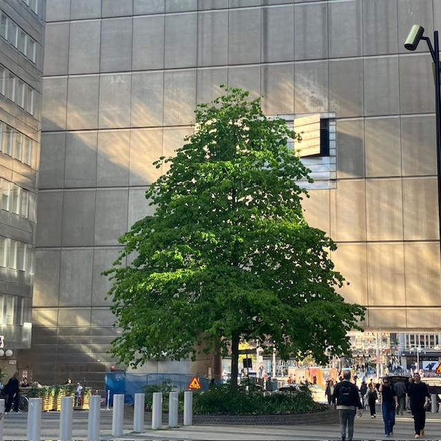         <h2 style='margin-bottom: 10px;'>10. Benny Fredrikssons torg</h2>         <h4 style='color: darkgreen; margin-top: 0;'>Turkisk trädhassel, Corylus colurna</h4>         <div style='font-size: 15px; line-height: 1.6; text-align: justify;'>       <div style="font-family: Arial, sans-serif; font-size: 15px; line-height: 1.6; text-align: left;">      I den upphöjda rundeln mellan Kulturhuset och Riksbanken planterades på 1990-talet en turkisk trädhassel. Trädet har äggrunda, svagt flikade, ljusgröna blad och en tydligt genomgående stam med flagig bark. Under vintern pryds det av dekorativa hanhängen och små röda honblommor. Nötterna är ganska stora och sitter samlade i stora, fransiga buketter.      <p>Du kan också hitta turkisk trädhassel på Sankt Göransgatan. Förskolor i det området har rapporterat att uppspelta ekorrar plockar hasselnötter av träden.</p>      </div>      </div>         <div style="margin-top: 10px; display: flex; justify-content: center; gap: 8px; flex-wrap: wrap;">             <audio id="audio10" src="10.m4a"></audio>             <a href="javascript:document.getElementsByClassName('leaflet-marker-icon')[8].click();"               style="background-color: #91D34C; color: white; padding: 8px 12px;                       text-decoration: none; border-radius: 6px; display: inline-block;">               ← Föregående             </a>             <a href="javascript:document.getElementById('audio10').play();"               style="background-color: #FFA500; color: white; padding: 8px 12px;                       text-decoration: none; border-radius: 6px; display: inline-block;">               Lyssna             </a>             <a href="javascript:document.getElementsByClassName('leaflet-marker-icon')[10].click();"               style="background-color: #91D34C; color: white; padding: 8px 12px;                       text-decoration: none; border-radius: 6px; display: inline-block;">               Nästa →             </a>         </div>     </div>     </div>`)[0];
                popup_660862bc8fedc08896157f61c15c1a4d.setContent(html_e5eb602af3ac245f4601fbe74d65f5d2);
            
        

        marker_eaea586247a64d3282c84242f65ac603.bindPopup(popup_660862bc8fedc08896157f61c15c1a4d)
        ;

        
    
    
                marker_eaea586247a64d3282c84242f65ac603.setIcon(div_icon_6e29464e618a1a6983627a03460947e7);
            
    
            var marker_b36576448100a86ac14a048629f9ece1 = L.marker(
                [59.331985008098364, 18.061241672472264],
                {
}
            ).addTo(map_79e752745585b6843efae43665627b9c);
        
    
            var div_icon_3a330beab1de06d317ec692d8d776b4a = L.divIcon({
  "html": "\n        \u003cdiv style=\"background-color: #91D34C; color: white;\n                        border-radius: 50%; width: 28px; height: 28px;\n                        text-align: center; line-height: 28px;\n                        font-weight: bold;\"\u003e11\u003c/div\u003e\n        ",
  "className": "empty",
});
            marker_b36576448100a86ac14a048629f9ece1.setIcon(div_icon_3a330beab1de06d317ec692d8d776b4a);
        
    
        var popup_42f0fec96021c21aa650fb5c8bd4d920 = L.popup({
  "maxWidth": 320,
});

        
            
                var html_7098bd4572395f4e9340393e2d5b5648 = $(`<div id="html_7098bd4572395f4e9340393e2d5b5648" style="width: 100.0%; height: 100.0%;">     <div style="max-height: 500px; width: 280px; overflow-y: auto; padding: 10px;">         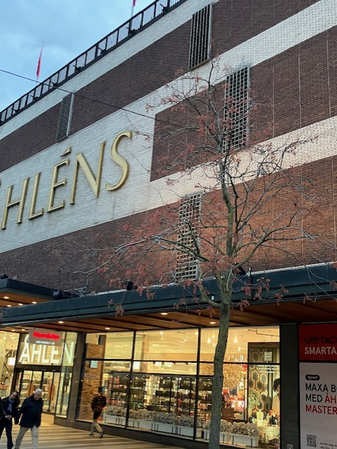         <h2 style='margin-bottom: 10px;'>11. Klarabergsviadukten, utanför Åhléns</h2>         <h4 style='color: darkgreen; margin-top: 0;'>Kinesträd, Koelreuteria paniculata</h4>         <div style='font-size: 15px; line-height: 1.6; text-align: justify;'>       <div style="font-family: Arial, sans-serif; font-size: 15px; line-height: 1.6; text-align: left;">      Kinesträden på Klarabergsviadukten är några av de träd som staden får flest frågor kring. Det är många förbipasserande som nyfiket undrar vad det är för slags träd.      <p>Tidigare stod det lindar på platsen men som inte trivdes alls. De mycket ledsna träden såg ut som att de hade gått en rond med en torktumlare. Det är inte särskilt förvånande då platsen inte gav lindarna några vidare förutsättningar. Det är en varm plats i staden och träden hade ytterst begränsat med rotutrymme i underjordiska lådor, ovanpå tunnelbanans tak.</p>      <p>Kinesträden hamnade här i omgångar efter att tätskiktet till tunnelbanan renoverades i mitten av 2010-talet. Det är ett mindre träd, som kan bli fem till åtta meter högt. En utmaning har varit att hitta fina exemplar som stamträd i plantskolan. Dels för att träden är fröförökade och dels för att de verkar föredra att växa som en buske.</p>      <p>Bladen är vanligen parbladiga och cirka 30 centimeter långa med bronsfärgat lövutspring, och blir sedan mörkgröna. Höstfärgen är brungul till orange. De blommar sent, under juli–augusti, med gula plymer. Träden får frukter under september som dekorativt sitter kvar i träden som kinesiska lyktor. Trädet är ljuskrävande och gillar varma platser.</p>      <p>Andra platser i staden där du kan hitta kinesträd är på Magnus Ladulåsgatan och snart även vid Slussen. Vill man resa lite längre bort finns de på Friisgatan i Malmö och i Dresden i Tyskland.</p>      </div>      </div>         <div style="margin-top: 10px; display: flex; justify-content: center; gap: 8px; flex-wrap: wrap;">             <audio id="audio11" src="11.m4a"></audio>             <a href="javascript:document.getElementsByClassName('leaflet-marker-icon')[9].click();"               style="background-color: #91D34C; color: white; padding: 8px 12px;                       text-decoration: none; border-radius: 6px; display: inline-block;">               ← Föregående             </a>             <a href="javascript:document.getElementById('audio11').play();"               style="background-color: #FFA500; color: white; padding: 8px 12px;                       text-decoration: none; border-radius: 6px; display: inline-block;">               Lyssna             </a>             <a href="javascript:document.getElementsByClassName('leaflet-marker-icon')[11].click();"               style="background-color: #91D34C; color: white; padding: 8px 12px;                       text-decoration: none; border-radius: 6px; display: inline-block;">               Nästa →             </a>         </div>     </div>     </div>`)[0];
                popup_42f0fec96021c21aa650fb5c8bd4d920.setContent(html_7098bd4572395f4e9340393e2d5b5648);
            
        

        marker_b36576448100a86ac14a048629f9ece1.bindPopup(popup_42f0fec96021c21aa650fb5c8bd4d920)
        ;

        
    
    
                marker_b36576448100a86ac14a048629f9ece1.setIcon(div_icon_3a330beab1de06d317ec692d8d776b4a);
            
    
            var marker_55635e182a4540667c1f393f19c8e5bf = L.marker(
                [59.331454241393075, 18.0599490761384],
                {
}
            ).addTo(map_79e752745585b6843efae43665627b9c);
        
    
            var div_icon_d5c3e16073e3ddff5a7cc60af8d97bec = L.divIcon({
  "html": "\n        \u003cdiv style=\"background-color: #91D34C; color: white;\n                        border-radius: 50%; width: 28px; height: 28px;\n                        text-align: center; line-height: 28px;\n                        font-weight: bold;\"\u003e12\u003c/div\u003e\n        ",
  "className": "empty",
});
            marker_55635e182a4540667c1f393f19c8e5bf.setIcon(div_icon_d5c3e16073e3ddff5a7cc60af8d97bec);
        
    
        var popup_0283b249f6c2943810a495e39db59c5c = L.popup({
  "maxWidth": 320,
});

        
            
                var html_02f35c02b35e9a81bc38d60d8f633f0c = $(`<div id="html_02f35c02b35e9a81bc38d60d8f633f0c" style="width: 100.0%; height: 100.0%;">     <div style="max-height: 500px; width: 280px; overflow-y: auto; padding: 10px;">                  <h2 style='margin-bottom: 10px;'>12. Klara västra kyrkogata</h2>         <h4 style='color: darkgreen; margin-top: 0;'>Korstörne, Gleditsia triacanthos f. inermis</h4>         <div style='font-size: 15px; line-height: 1.6; text-align: justify;'>       <div style="font-family: Arial, sans-serif; font-size: 15px; line-height: 1.6; text-align: left;">      Utformningen på platsen flörtar lite med miniparken Paley park i New York där en dunge ljusgrön korstörne står insprängd mellan skyskraporna.      <p>Korstörnet är en värmegynnad och ljusälskande pionjärart och ett av de vanligaste gatuträden i östra USA. De beskrivs ibland som ”torgträd”, det vill säga träd som får blad lite senare på året. Träden skymmer därför inte vårsolen, samtidigt som ett skirt lövverk senare ger en behaglig skugga under högsommaren.</p>      <p>Under hösten får träden fina, gula höstfärger och dekorativa ärtskidor som kan sitta kvar när träden är avlövade. ”Inermis” är latin för obeväpnad, vilket innebär att de här träden inte har de spetsiga och vassa utskott, så kallade tornar, som skyddar mot betande djur och som torde vara varje arborists mardröm.</p>      </div>      </div>         <div style="margin-top: 10px; display: flex; justify-content: center; gap: 8px; flex-wrap: wrap;">             <audio id="audio12" src="12.m4a"></audio>             <a href="javascript:document.getElementsByClassName('leaflet-marker-icon')[10].click();"               style="background-color: #91D34C; color: white; padding: 8px 12px;                       text-decoration: none; border-radius: 6px; display: inline-block;">               ← Föregående             </a>             <a href="javascript:document.getElementById('audio12').play();"               style="background-color: #FFA500; color: white; padding: 8px 12px;                       text-decoration: none; border-radius: 6px; display: inline-block;">               Lyssna             </a>             <a href="javascript:document.getElementsByClassName('leaflet-marker-icon')[12].click();"               style="background-color: #91D34C; color: white; padding: 8px 12px;                       text-decoration: none; border-radius: 6px; display: inline-block;">               Nästa →             </a>         </div>     </div>     </div>`)[0];
                popup_0283b249f6c2943810a495e39db59c5c.setContent(html_02f35c02b35e9a81bc38d60d8f633f0c);
            
        

        marker_55635e182a4540667c1f393f19c8e5bf.bindPopup(popup_0283b249f6c2943810a495e39db59c5c)
        ;

        
    
    
                marker_55635e182a4540667c1f393f19c8e5bf.setIcon(div_icon_d5c3e16073e3ddff5a7cc60af8d97bec);
            
    
            var marker_8c2ac2096cfb485d335cafb4b1ef0735 = L.marker(
                [59.33063625281176, 18.059503681850124],
                {
}
            ).addTo(map_79e752745585b6843efae43665627b9c);
        
    
            var div_icon_da66cafe9389ad481bb5b44e385b07e9 = L.divIcon({
  "html": "\n        \u003cdiv style=\"background-color: #91D34C; color: white;\n                        border-radius: 50%; width: 28px; height: 28px;\n                        text-align: center; line-height: 28px;\n                        font-weight: bold;\"\u003e13\u003c/div\u003e\n        ",
  "className": "empty",
});
            marker_8c2ac2096cfb485d335cafb4b1ef0735.setIcon(div_icon_da66cafe9389ad481bb5b44e385b07e9);
        
    
        var popup_bd1cc0ed99854000bf631a96c2624a37 = L.popup({
  "maxWidth": 320,
});

        
            
                var html_51fa6f94a46651d353e81be9f7aa838a = $(`<div id="html_51fa6f94a46651d353e81be9f7aa838a" style="width: 100.0%; height: 100.0%;">     <div style="max-height: 500px; width: 280px; overflow-y: auto; padding: 10px;">         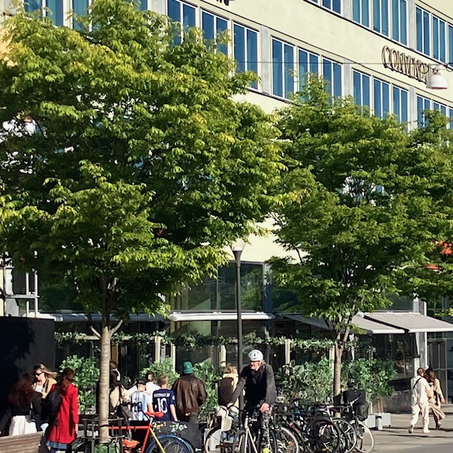         <h2 style='margin-bottom: 10px;'>13. Vasagatan, mittemot Centralstationen</h2>         <h4 style='color: darkgreen; margin-top: 0;'>Japansk zelkova, Zelkova serrata</h4>         <div style='font-size: 15px; line-height: 1.6; text-align: justify;'>       <div style="font-family: Arial, sans-serif; font-size: 15px; line-height: 1.6; text-align: left;">      Vasagatan rustades upp 2018–2021 och fick då bredare trottoarer, cykelbanor och nya trädplanteringar.      <p>Zelkovan tillhör almfamiljen och har stora likheter med denna. Växtsättet är brett vasformigt. Bladen är mörkgröna, utdragna med sågade kanter. Höstfärgerna är roströda. De har en slät stam som med tiden spricker upp i dekorativa plattor.</p>      <p>Andra platser i staden där du kan hitta zelkova är vid korsningen Rådmansgatan och Birger Jarlsgatan.</p>      </div>      </div>         <div style="margin-top: 10px; display: flex; justify-content: center; gap: 8px; flex-wrap: wrap;">             <audio id="audio13" src="13.m4a"></audio>             <a href="javascript:document.getElementsByClassName('leaflet-marker-icon')[11].click();"               style="background-color: #91D34C; color: white; padding: 8px 12px;                       text-decoration: none; border-radius: 6px; display: inline-block;">               ← Föregående             </a>             <a href="javascript:document.getElementById('audio13').play();"               style="background-color: #FFA500; color: white; padding: 8px 12px;                       text-decoration: none; border-radius: 6px; display: inline-block;">               Lyssna             </a>             <a href="javascript:document.getElementsByClassName('leaflet-marker-icon')[13].click();"               style="background-color: #91D34C; color: white; padding: 8px 12px;                       text-decoration: none; border-radius: 6px; display: inline-block;">               Nästa →             </a>         </div>     </div>     </div>`)[0];
                popup_bd1cc0ed99854000bf631a96c2624a37.setContent(html_51fa6f94a46651d353e81be9f7aa838a);
            
        

        marker_8c2ac2096cfb485d335cafb4b1ef0735.bindPopup(popup_bd1cc0ed99854000bf631a96c2624a37)
        ;

        
    
    
                marker_8c2ac2096cfb485d335cafb4b1ef0735.setIcon(div_icon_da66cafe9389ad481bb5b44e385b07e9);
            
    
            var marker_95e1663c5b3ab5271cea34cf57ec9e82 = L.marker(
                [59.33202738155008, 18.058277626533595],
                {
}
            ).addTo(map_79e752745585b6843efae43665627b9c);
        
    
            var div_icon_f118ac020bb16d26bded39bfff752225 = L.divIcon({
  "html": "\n        \u003cdiv style=\"background-color: #91D34C; color: white;\n                        border-radius: 50%; width: 28px; height: 28px;\n                        text-align: center; line-height: 28px;\n                        font-weight: bold;\"\u003e14\u003c/div\u003e\n        ",
  "className": "empty",
});
            marker_95e1663c5b3ab5271cea34cf57ec9e82.setIcon(div_icon_f118ac020bb16d26bded39bfff752225);
        
    
        var popup_78d0c8d4ef7779979a3cb2637a2432d2 = L.popup({
  "maxWidth": 320,
});

        
            
                var html_5b081f962812d60d794f6638854f8107 = $(`<div id="html_5b081f962812d60d794f6638854f8107" style="width: 100.0%; height: 100.0%;">     <div style="max-height: 500px; width: 280px; overflow-y: auto; padding: 10px;">         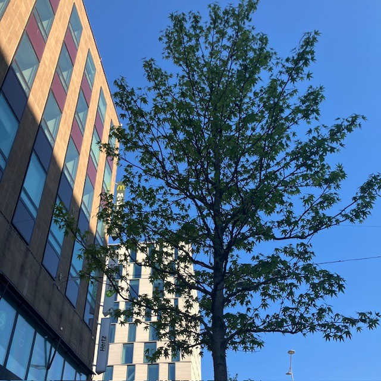         <h2 style='margin-bottom: 10px;'>14. Vasagatan, korsningen Mäster Samuelsgatan</h2>         <h4 style='color: darkgreen; margin-top: 0;'>Ambraträd, Liquidambar styraciflua ’Worplesdon’</h4>         <div style='font-size: 15px; line-height: 1.6; text-align: justify;'>       <div style="font-family: Arial, sans-serif; font-size: 15px; line-height: 1.6; text-align: left;">      Trädet kommer ursprungligen från USA, men sorten är en engelsk selektion. I början växer trädet som en pelare för att med tiden få en mer oval form. De har spännande, stjärnformiga blad med utdragna spetsar och djupa flikar. Höstfärgerna kan bli slående i aprikos och orange. Båda orden i namnet syftar till den kåda som kan användas som tuggummi, vilket även har gett trädet dess amerikanska namn, ”Sweetgum”.      </div>      </div>         <div style="margin-top: 10px; display: flex; justify-content: center; gap: 8px; flex-wrap: wrap;">             <audio id="audio14" src="14.m4a"></audio>             <a href="javascript:document.getElementsByClassName('leaflet-marker-icon')[12].click();"               style="background-color: #91D34C; color: white; padding: 8px 12px;                       text-decoration: none; border-radius: 6px; display: inline-block;">               ← Föregående             </a>             <a href="javascript:document.getElementById('audio14').play();"               style="background-color: #FFA500; color: white; padding: 8px 12px;                       text-decoration: none; border-radius: 6px; display: inline-block;">               Lyssna             </a>             <a href="javascript:document.getElementsByClassName('leaflet-marker-icon')[14].click();"               style="background-color: #91D34C; color: white; padding: 8px 12px;                       text-decoration: none; border-radius: 6px; display: inline-block;">               Nästa →             </a>         </div>     </div>     </div>`)[0];
                popup_78d0c8d4ef7779979a3cb2637a2432d2.setContent(html_5b081f962812d60d794f6638854f8107);
            
        

        marker_95e1663c5b3ab5271cea34cf57ec9e82.bindPopup(popup_78d0c8d4ef7779979a3cb2637a2432d2)
        ;

        
    
    
                marker_95e1663c5b3ab5271cea34cf57ec9e82.setIcon(div_icon_f118ac020bb16d26bded39bfff752225);
            
    
            var marker_d517ff4c58a141c4421e2d894a65a896 = L.marker(
                [59.33347646357579, 18.057035321554384],
                {
}
            ).addTo(map_79e752745585b6843efae43665627b9c);
        
    
            var div_icon_65a59e0eec596fab7fec78028acc2e12 = L.divIcon({
  "html": "\n        \u003cdiv style=\"background-color: #91D34C; color: white;\n                        border-radius: 50%; width: 28px; height: 28px;\n                        text-align: center; line-height: 28px;\n                        font-weight: bold;\"\u003e15\u003c/div\u003e\n        ",
  "className": "empty",
});
            marker_d517ff4c58a141c4421e2d894a65a896.setIcon(div_icon_65a59e0eec596fab7fec78028acc2e12);
        
    
        var popup_c5f0af208c2fb4b970299d812bcdf927 = L.popup({
  "maxWidth": 320,
});

        
            
                var html_53fd2c3eb01766714598a42b9c005c57 = $(`<div id="html_53fd2c3eb01766714598a42b9c005c57" style="width: 100.0%; height: 100.0%;">     <div style="max-height: 500px; width: 280px; overflow-y: auto; padding: 10px;">         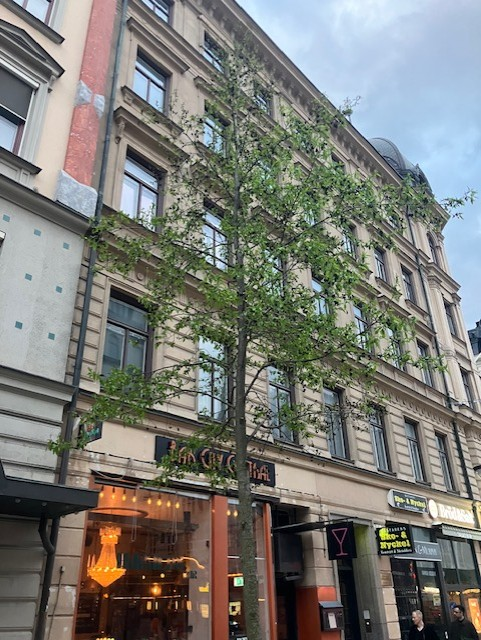         <h2 style='margin-bottom: 10px;'>15. Vasagatan, korsningen Gamla Brogata</h2>         <h4 style='color: darkgreen; margin-top: 0;'>Rödask, Fraxinus pensylvanica ’Summit’</h4>         <div style='font-size: 15px; line-height: 1.6; text-align: justify;'>       <div style="font-family: Arial, sans-serif; font-size: 15px; line-height: 1.6; text-align: left;">      Det här trädet är en amerikansk selektion av rödask, med ovalt till rundat växtsätt. Trädet har stora och vackert glänsande, gröna blad med en smörgul höstfärg. Trädet är värmegynnat, torktåligt och tål stadsklimatet.      <p>Andra platser i staden där du kan hitta rödask är på Fredriksdalstorget, där den står i kombination med vitask (Fraxinus americana ’Autumn Purple’), och på Torsgatan.</p>      </div>      </div>         <div style="margin-top: 10px; display: flex; justify-content: center; gap: 8px; flex-wrap: wrap;">             <audio id="audio15" src="15.m4a"></audio>             <a href="javascript:document.getElementsByClassName('leaflet-marker-icon')[13].click();"               style="background-color: #91D34C; color: white; padding: 8px 12px;                       text-decoration: none; border-radius: 6px; display: inline-block;">               ← Föregående             </a>             <a href="javascript:document.getElementById('audio15').play();"               style="background-color: #FFA500; color: white; padding: 8px 12px;                       text-decoration: none; border-radius: 6px; display: inline-block;">               Lyssna             </a>             <a href="javascript:document.getElementsByClassName('leaflet-marker-icon')[15].click();"               style="background-color: #91D34C; color: white; padding: 8px 12px;                       text-decoration: none; border-radius: 6px; display: inline-block;">               Nästa →             </a>         </div>     </div>     </div>`)[0];
                popup_c5f0af208c2fb4b970299d812bcdf927.setContent(html_53fd2c3eb01766714598a42b9c005c57);
            
        

        marker_d517ff4c58a141c4421e2d894a65a896.bindPopup(popup_c5f0af208c2fb4b970299d812bcdf927)
        ;

        
    
    
                marker_d517ff4c58a141c4421e2d894a65a896.setIcon(div_icon_65a59e0eec596fab7fec78028acc2e12);
            
    
            var marker_b49cbbbeef366da3c9821282100cda9a = L.marker(
                [59.33415188448287, 18.05644586312134],
                {
}
            ).addTo(map_79e752745585b6843efae43665627b9c);
        
    
            var div_icon_7d0ee56a437a2121e4310c5b70764876 = L.divIcon({
  "html": "\n        \u003cdiv style=\"background-color: #91D34C; color: white;\n                        border-radius: 50%; width: 28px; height: 28px;\n                        text-align: center; line-height: 28px;\n                        font-weight: bold;\"\u003e16\u003c/div\u003e\n        ",
  "className": "empty",
});
            marker_b49cbbbeef366da3c9821282100cda9a.setIcon(div_icon_7d0ee56a437a2121e4310c5b70764876);
        
    
        var popup_fa12f36190c50b33578e79a77bf2da59 = L.popup({
  "maxWidth": 320,
});

        
            
                var html_89279feed052f7b7f2d3e3b62daf6f5d = $(`<div id="html_89279feed052f7b7f2d3e3b62daf6f5d" style="width: 100.0%; height: 100.0%;">     <div style="max-height: 500px; width: 280px; overflow-y: auto; padding: 10px;">                  <h2 style='margin-bottom: 10px;'>16. Vasagatan, korsningen Kungsgatan</h2>         <h4 style='color: darkgreen; margin-top: 0;'>Berlineral, Alnus X spaethii</h4>         <div style='font-size: 15px; line-height: 1.6; text-align: justify;'>       <div style="font-family: Arial, sans-serif; font-size: 15px; line-height: 1.6; text-align: left;">      I naturen står alar ofta på platser där vattentillgången kan ändras mycket över året, till exempel stränder. Det gör att den är väl anpassad till det hårda klimat som innerstaden innebär. Den visar god tillväxt i växtbäddar uppbyggda med makadam, biokol och kompost. Den här alen är en hybrid mellan japansk al (Alnus japonica) och storbladig al (Alnus subcordata). Berlineralen har en rak, genomgående stam och ett friskt, mörkgrönt bladverk. Tyvärr får den inga höstfärger, utan bladen förblir gröna till dess att de faller av.      <p>Andra platser i staden där du kan se berlineral är på Torsgatan och på Sockenvägen vid Sockenplan.</p>      </div>      </div>         <div style="margin-top: 10px; display: flex; justify-content: center; gap: 8px; flex-wrap: wrap;">             <audio id="audio16" src="16.m4a"></audio>             <a href="javascript:document.getElementsByClassName('leaflet-marker-icon')[14].click();"               style="background-color: #91D34C; color: white; padding: 8px 12px;                       text-decoration: none; border-radius: 6px; display: inline-block;">               ← Föregående             </a>             <a href="javascript:document.getElementById('audio16').play();"               style="background-color: #FFA500; color: white; padding: 8px 12px;                       text-decoration: none; border-radius: 6px; display: inline-block;">               Lyssna             </a>             <a href="javascript:document.getElementsByClassName('leaflet-marker-icon')[0].click();"               style="background-color: #91D34C; color: white; padding: 8px 12px;                       text-decoration: none; border-radius: 6px; display: inline-block;">               Nästa →             </a>         </div>     </div>     </div>`)[0];
                popup_fa12f36190c50b33578e79a77bf2da59.setContent(html_89279feed052f7b7f2d3e3b62daf6f5d);
            
        

        marker_b49cbbbeef366da3c9821282100cda9a.bindPopup(popup_fa12f36190c50b33578e79a77bf2da59)
        ;

        
    
    
                marker_b49cbbbeef366da3c9821282100cda9a.setIcon(div_icon_7d0ee56a437a2121e4310c5b70764876);
            
    
            var marker_d14de7e1953ae0b1ee149f29f539e879 = L.marker(
                [59.33210074001757, 18.07150116288134],
                {
}
            ).addTo(map_79e752745585b6843efae43665627b9c);
        
    
            var icon_350898999ab0774d056f73feb1096c30 = L.AwesomeMarkers.icon(
                {
  "markerColor": "blue",
  "iconColor": "white",
  "icon": "info-circle",
  "prefix": "fa",
  "extraClasses": "fa-rotate-0",
}
            );
        
    
        var popup_b53acf0283e8efc7b0dbdad39723d4e7 = L.popup({
  "maxWidth": "100%",
});

        
            
                var html_fea25a6fb5edc1ce549d898bc7545c33 = $(`<div id="html_fea25a6fb5edc1ce549d898bc7545c33" style="width: 100.0%; height: 100.0%;">         <b>Trädpromenaden: från Kungsträdgården till Vasagatan</b><br>         Promenaden är cirka 1,8 kilometer lång och tar ungefär 25 minuter att gå i lugn takt.         Du kan följa hela sträckan eller bara besöka enstaka träd längs vägen.     </div>`)[0];
                popup_b53acf0283e8efc7b0dbdad39723d4e7.setContent(html_fea25a6fb5edc1ce549d898bc7545c33);
            
        

        marker_d14de7e1953ae0b1ee149f29f539e879.bindPopup(popup_b53acf0283e8efc7b0dbdad39723d4e7)
        ;

        
    
    
                marker_d14de7e1953ae0b1ee149f29f539e879.setIcon(icon_350898999ab0774d056f73feb1096c30);
            
    
            var marker_8dcb2b8269c741ae0655c4c1c2d5a9da = L.marker(
                [59.33415188448287, 18.05644586312134],
                {
}
            ).addTo(map_79e752745585b6843efae43665627b9c);
        
    
            var icon_2f6f31d52f35a09665af10bf602380a0 = L.AwesomeMarkers.icon(
                {
  "markerColor": "red",
  "iconColor": "white",
  "icon": "flag-checkered",
  "prefix": "fa",
  "extraClasses": "fa-rotate-0",
}
            );
        
    
        var popup_0a6d7153a9a023ef2a21846708573d70 = L.popup({
  "maxWidth": "100%",
});

        
            
                var html_8c4d8b6da6aba9c12861bef45bb64b6a = $(`<div id="html_8c4d8b6da6aba9c12861bef45bb64b6a" style="width: 100.0%; height: 100.0%;">Slut: Vasagatan, korsningen Kungsgatan</div>`)[0];
                popup_0a6d7153a9a023ef2a21846708573d70.setContent(html_8c4d8b6da6aba9c12861bef45bb64b6a);
            
        

        marker_8dcb2b8269c741ae0655c4c1c2d5a9da.bindPopup(popup_0a6d7153a9a023ef2a21846708573d70)
        ;

        
    
    
                marker_8dcb2b8269c741ae0655c4c1c2d5a9da.setIcon(icon_2f6f31d52f35a09665af10bf602380a0);
            
</script>
</html>
